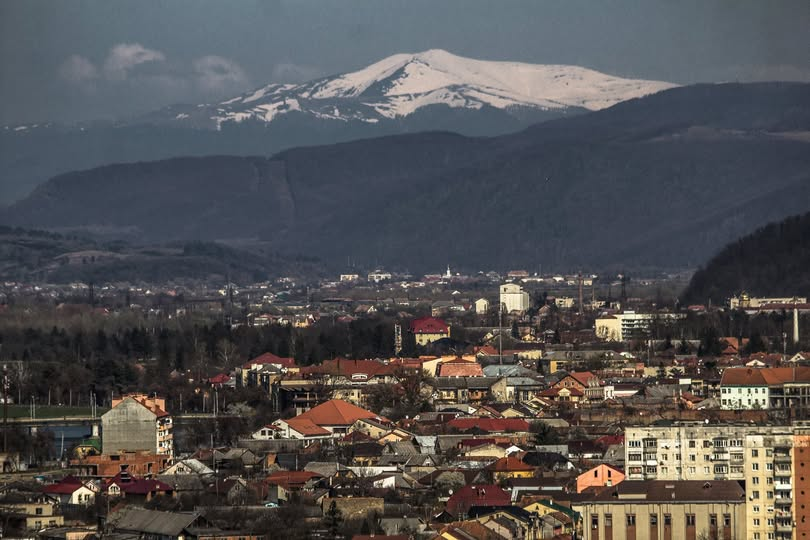

Колодницький Володимир Сергійович
Дата народження: 20.08.2002, м. Ірпінь
Освіта: Школа №17 І-ІІІ ступенів. КПІ ім. Ігоря Сікорського.
Хобі:
-
Заняття спортом: тренажерний зал, волейбол.
-
Комп'ютерні ігри, а також комп'ютерні компоненти, збірка і т.д.
-
Настільні ігри: Шахи, Монополія, Мафія.
Улюблені фільми:
-
Безславні виродки (2009)
-
Острів проклятих (2010)
-
Початок (2010)
-
Мерзенна вісімка (2015)
-
Інтерстеллар (2014)
Моє улюблене місто:
Мука́чево — місто на заході України,
адміністративний центр Мукачівської міської громади та
Мукачівського району Закарпатській області.
Один із центрів Ужгородської агломерації,
важливий промисловий та культурний центр.
